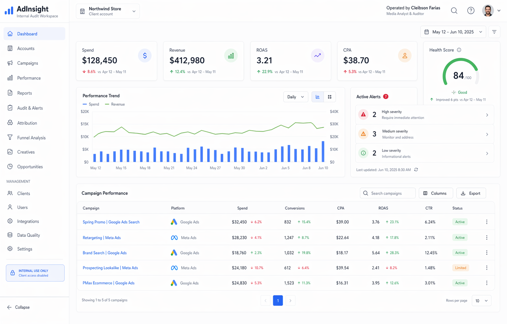
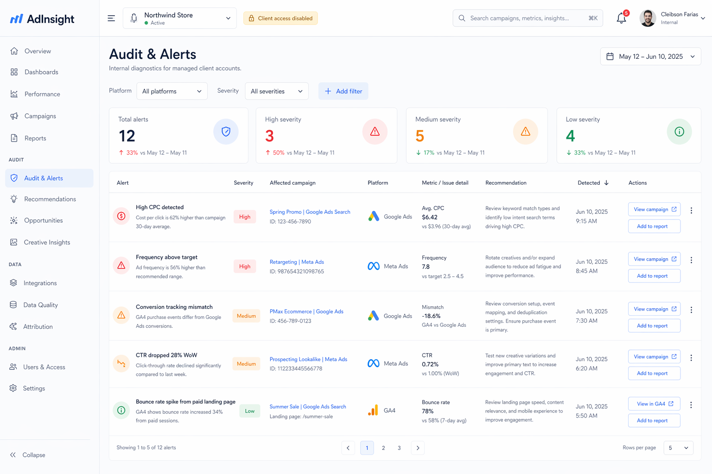
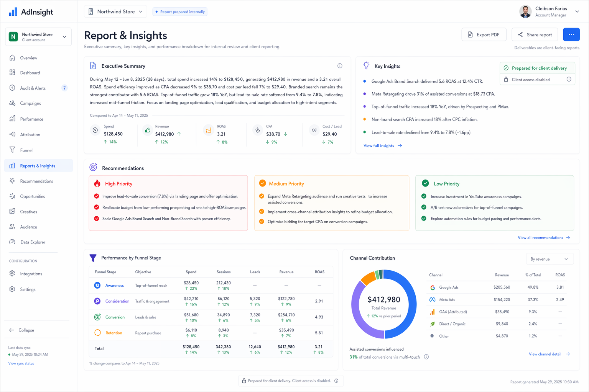
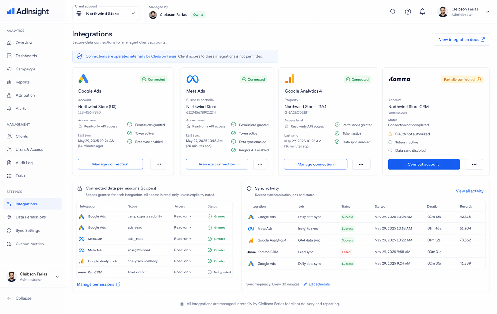
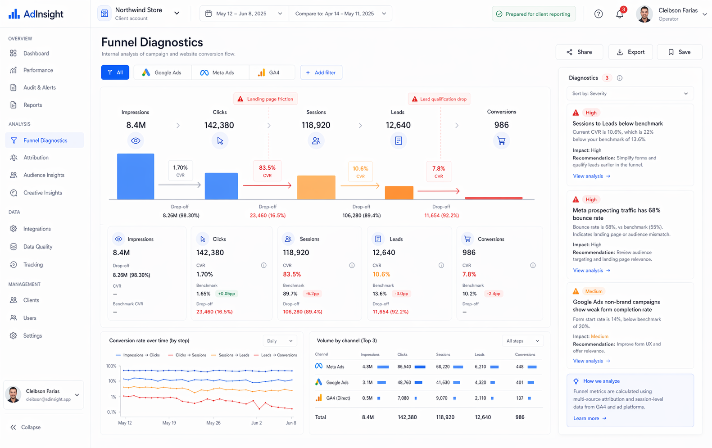

Internal platform. Managed service delivery.
AdInsight - Paid Media Audit & Analytics Platform
AdInsight is an internal platform used to analyze Google Ads, Meta Ads, and GA4 data, generating diagnostics, alerts, and performance insights for managed client accounts.
Clients do not log into the platform directly. Reports, findings, and recommendations are delivered as part of the service.
Internal analysis view

Workflow
How AdInsight supports client analysis delivery
The process is built around internal analysis operations, secure data access, and structured reporting for managed accounts.
Client accounts are connected
Advertising accounts from Google Ads, Meta Ads, and GA4 are securely connected and authorized for managed client environments.
Data synchronization
Performance data such as impressions, clicks, cost, conversions, and session quality signals is collected automatically.
Data normalization
Channel data is standardized into a shared structure so campaign, funnel, and account-level analysis stays consistent.
Automated audit and diagnostics
AdInsight applies rules, scoring models, and diagnostics to detect inefficiencies, anomalies, and optimization opportunities.
Report delivery
Clients receive structured reports, findings, insights, and recommendations prepared from the internal analysis workflow.
Internal Operations
Purpose-built for internal auditing and service delivery
AdInsight is positioned as proprietary internal software that supports managed analysis workflows rather than a self-service SaaS product.
Deterministic diagnostics
Scoring, anomaly checks, and rule evaluation are applied before insights are written into client-facing deliverables.
Cross-channel normalization
Campaign and funnel data is standardized so Google Ads, Meta Ads, and GA4 can be evaluated using comparable logic.
Service-led output
The platform supports Cleibson Farias internally while clients receive analysis, recommendations, and structured reporting.
Compliance
Use of the Google Ads API
AdInsight uses the Google Ads API in read-only mode to securely access campaign performance data such as impressions, clicks, cost, and conversions.
This data is used exclusively to:
- Analyze campaign performance
- Detect inefficiencies and anomalies
- Generate audit reports and diagnostics
- Produce insights and recommendations for client accounts
AdInsight does not make changes to client campaigns and does not provide public access to the platform. The platform is used internally to support marketing analysis services.
Read-only usage
Managed client accounts
Internal operator workflow
Capabilities
Internal software built for audit accuracy and reporting clarity
Every feature supports analysis quality, reproducible diagnostics, and actionable service deliverables.
Automated Audit Engine
Detects high CPC, low CTR, tracking inconsistencies, spend spikes, delivery issues, and week-over-week performance drops.
Cross-Platform Analysis
Unifies Google Ads, Meta Ads, and GA4 data to compare channel efficiency using a consistent analytical model.
Funnel Diagnostics
Maps the path from click to conversion to reveal landing-page friction, lead-quality gaps, and downstream drop-offs.
Performance Scoring
Calculates structured health scores for managed accounts using deterministic rules, benchmarks, and anomaly weighting.
Alerts & Recommendations
Produces prioritized findings and practical optimization recommendations for client reporting and action plans.
Product Preview
Internal analysis views used to prepare client deliverables
The screenshots below represent internal operational screens, not a client login experience.
Dashboard
Internal KPI overview with spend, revenue, ROAS, CPA, health score, active alerts, and campaign-level performance.

Audit & Alerts
Internal diagnostics queue highlighting issues such as high CPC, weak CTR, tracking mismatches, and media inefficiencies.

Insights / Report
Structured reporting view used to prepare executive summaries, findings, and recommendations for client delivery.

Integrations
Connection management for Google Ads, Meta Ads, Google Analytics 4, and Kommo CRM within managed service workflows.

Funnel Diagnostics
Conversion-flow analysis exposing bottlenecks between impressions, clicks, sessions, leads, and final conversions.
Integrations
Connected sources across paid media and analytics workflows
AdInsight connects to advertising and analytics platforms to collect and analyze performance data across channels.
Google Ads
Read-only campaign performance data
Meta Ads
Paid social delivery and conversion signals
Google Analytics 4
Session behavior and funnel validation
Kommo CRM
Lead and pipeline context for reporting
Service Positioning
How clients receive value
AdInsight is used internally to support paid media analysis services. Clients do not access the platform directly. Instead, they receive:
- Performance reports
- Audit findings
- Diagnostics
- Optimization recommendations
Credibility
Real business use case
AdInsight is currently used in real client environments to analyze and audit paid media performance across Google Ads, Meta Ads, GA4, and CRM-linked reporting workflows.
The platform exists to support operational analysis and report generation for managed accounts, not as a public self-service application.
Executive report
High-level performance summary, account health, efficiency trends, and top strategic actions.
Audit findings
Prioritized issues such as CPC inflation, CTR drops, tracking inconsistencies, and conversion bottlenecks.
Optimization roadmap
Actionable next steps grouped by priority and platform, prepared for implementation and account follow-up.
Contact
Request an analysis workflow review
For managed client account analysis, reporting support, or compliance clarification, contact Cleibson Farias directly.